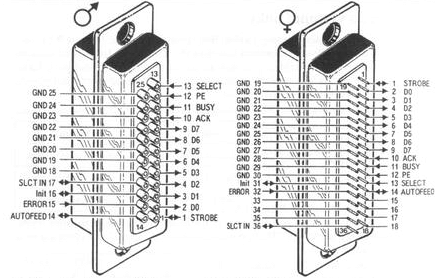
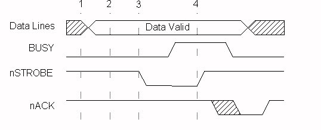
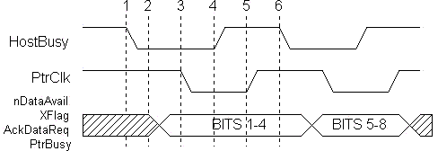
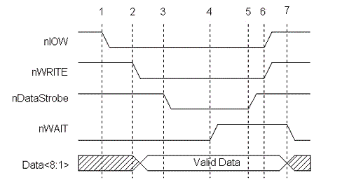
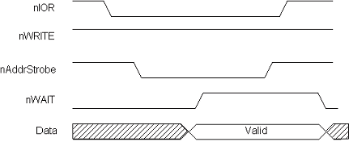
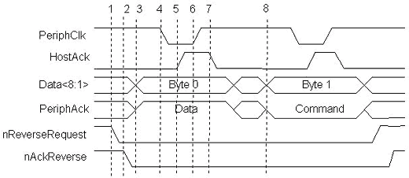

Summary of required information, tutorials, instructions, tips & tricks, datasheets etc
Content
| Introduction |
Parallel port LPT is the standard component in all common personal computers for parallel data communication (parallel bits transfer) by 17 digital lines, which can be divided on 8 data signal lines and 9 lines for communication control (hanshaking). A PC with a peripherial device can be interconnected by 2m long cabel for certainty, but in practise it is usually possible to use up to 5m long cabel. The parallel port for the PC was originally made for communication with a printer, it means one direction data transfer. Later it was specified other modes which modify LPT port for bidirectional data transfer with data rate up to 5Mbps. The parallel port was standardized in 1997 as IEEE 1284. This standard defines 5 activity modes: 1. SPP mode - Compatibility Mode (Centronics mode). |
LPT port connection
Parallel port usually uses two types of connectors:
In figure 1., there is description of each pin and signal, which represents them. There is pertinence each pin to PC register (Data,Status, Control) for both connectors. Standard IEEE1284 defines also 36-pin connector similar with Centronics, but smaller. 
Fig. 1. LPT signals assigment to 25-pin D-SUB connector
Tab 1. Pin Assignments of the D-Type 25 pin Parallel Port Connector Note: Pins table for LPT with their names is possible to download in Documents section or with figures of Centronics port pins resolution in LPT port pins resolution for IEEE 1284 standard. Signals definition
Linkage of mostly used cabels
For an every data cabel and for parallel cabels two-times important is shielding. Every data line should has its ground line (GND) side by side or should be shielded. So it's possible to avoid crosstalks between lines. It means possible higher data rate and communication on further distance. If a flat cabel is used, the wiring will be done by structure of the cabel and port. If wires budle is used, every data line should be twisted with signal ground line. Shielding of all twisted pairs makes the parameters better. LPT communication modes
This mode is also called Centronics mode and it is standard mode for parallel data communication. It was originally intended only for communication PC with printer. There is defined only forward data transfer, it means from a PC to a peripheral device and data rate can be only to 150kbps. Communication process is described in following figure 3.  Fig. 3. Compatibility Mode (SPP mode) Data Transfer Cycle Compatibility Mode phase transitions:
In nowadays, many of the integrated 1284 I/O controllers have implemented Fast Centronics or Paralel Port FIFO Mode, which use FIFO buffers for data transfer. Then data written in FIFO port are transfered to printer using hardware generated handshake signals and it increases data rate up to 500KBbs. However this mode isn't defined in standard IEEE 1284. SPP Register InterfaceThe basic SPP mode of parallel port is controled by 3 base registers:
Pins allocation to bits in registers is in the following figure 4.
Fig. 4. Bits allocation in the LPT parallel port
Tab 4. Data Register On base address there is data register for transmitting of the 8-bit value on lines. The register is intended only for writing. Reading is possible, but it is read only last transmited byte.
Tab. 5. Status Register Status register with address base +1 is intended for reading and describes state of the communicating device (printer).
Tab. 6. Control Register Control register (Tab. 6) is designated for writing and it enables to control of communicating device (printer) by the 5 output bits.
Nibble mode is way how to get reverse channel and bidirectional communication between peripherial device and PC directly from classical SPP Compatible mode without hardware adjustment. It is neccesary only software support. Therefore the data rate limit is up to 100kbps. The advantage is ability of bidirectional communication on all PCs with LPT. For transfer it is used 5 inputs lines of PC port which are intended for the handshake. The four ones are used for data transfer into PC. Using of these lines the periphery can transmit byte as sequence of 2 nibbles (4 bits) in two followings data cycles. Both cycles decribe figure 5. and table 7.
 Fig. 5. Byte Mode Data Transfer Cycle
Tab. 7. Nibble Mode Signals
After implementation of parallel port interface, some producers in the lead with IBM increase transfer capacity by removing data lines drivers and provide bidirectional 8-bit communication by way of data lines. Then data rate is up to 200kbps. Figure 6. shows one transfer cycle in this mode and table 8. describe particular signals.
Tab. 8. Byte Mode Signals
EPP - Enhanced Parallel Port protocol was originally developed by companies Intel, Xircom and Zenith Data Systems to provide powefull connection through parallel port and still was compatible with standard LPT. This protocol was for the first time implemented in 386SL chipset (82360 I/O chip). After this it became a part of the IEEE 1284 standard. The effect of this mode is data rate between 500kbps and 2Mbps. The transfer is as fast as data rate of the slowest communicating devices. The rate is found from changings of messages and responses from handshake signals nWait and nDataStrobe ( figure 7.). EPP protocol provides 4 transfer cycles:
Data cycles are intended for data transfer between PC and peripherials. Address cycles are intended for channel address tranfer or command and control information. Both are neccessery to show as two different transfer cycles.
Tab. 9. EPP mode signals Definitions Figure 5. shows one of the data write cycle. CPU signal nIOW emphasizes all handshake which come on one I/O cycles.  Data Write cycle phase transitions:
 Fig. 8. EPP Address Read Cycle Note : The parallel ports with EPP before standardization IEEE 1284 can have little bit different process of some handshake signals. EPP Register InterfaceThe following table 10. describes extended registers in comparison with SPP mode. As was written higher, SPP mode uses 3 basic registers: Data, Status and Control Register. EPP mode extents them about several new registers as it is in the table 10, which presents register offsets from base port address.
Tab. 10. EPP Register Definitions An easy attempt for writing on base address + 4 can find, if the device supports this communation mode.
The Extended Capability Port, or ECP, protocol was proposed by Hewlett Packard and Microsoft as an advanced mode for communication with printer and scanner type peripherals. Data rate in this mode can be up to 800KBps without using DMA ( Direct Memory Access) and up to 2MBps with help of DMA. It's true in implementation on ISA bus. Nowadays LPT interface implemented on PCI bus can reach up to 3 or 5 MBps. Sometimes it's presented possibility up to 8MBps. The ECP protocol provides the following cycle types in both the forward and reverse directions:
Full register implementation and description can be found in Microsoft document: "The IEEE 1284 Extended Capabilities Port Protocol and ISA Interface Standard" (ecp_reg.pdf). This document defines features and implementation which IEEE 1284 standard doesn't appreciate. As example Run_Length_Encoding (RLE) data compression, FIFO buffers, DMA and programming too. RLE enables real-time data compression with ratio up to 64:1, but it have to be permited on both communicating devices. Plná registrová implementace a popis lze nalézt v dokumentu Microsoft: "The IEEE 1284 Extended Capabilities Port Protocol and ISA Interface Standard" (ecp_reg.pdf). Tento dokument definuje vlastnosti a implementaci, které IEEE 1284 standard nepostihuje. Jako například Run_Length_Encoding (RLE) datovou kompresi, FIFO buffery, DMA i programování. It's advantageous for example in transfer of large data amount of a picture from a scaner. Channel addressing is different from EPP mode. The ECP addressing (Channel addressing) is intended for addressing of many logical devices by one physical device. For example to one parallel port are connected FAX, printer and modem. Using ECP channel addressing it's possible accesses to each one. So it's possible to receive data from the modem during the time when data channel is busy because of printer printing. In basic communication mode during busy signal from printer isn't able to communicate with others devices. In ECP mode is enough only to address other logical channel and communication can proceed. In the same way as other extended modes ECP protocol redefines classical SPP signals and adds other signals for ECP handshake.
Tab. 11. ECP Mode Signals Figure 9 shows two forward data transfer cycles. When HostAck is high it indicates that a data cycle is taking place. When HostAck is asserted low, a command cycle is taking place and the data represents either an RLE count or a Channel address. Bit 8, of the data byte is used to indicate RLE vs. Channel address. If bit 8 is 0, then bits 1-7 represent a Run_Length Count (0-127). If bit 8 is 1, then bits 1-7 represent a Channel address (0-127).
 Fig. 9. ECP Forward Data and Command Cycle Note: Because in ECP mode FIFO buffers are used, it's necessary to point out that receiving device has valid data in FIFO buffer in time point 4, thus after pass of signal HostClk in high level. Between points 3 and 4 it's possible to interrupt trasfer. Then it isn't guaranteed that data was successfully transfered. Figure 10 shows a reverse channel command cycle followed by a reverse channel data cycle. The I/O read or write strobes are not shown in these figures. This is because the ECP FIFOs are used to decouple the ISA data transfers, either DMA or programmed I/O, from the actual host/peripheral data transfers. It is this decoupling of the transfer states that makes the ECP protocol a "loosely coupled" protocol. The software driver does not know the exact state of the data transfers. If a large block is being transferred via DMA, the driver does not know if the 123rd byte is being transferred or the 342,201st byte. As in the case of printers, the software may not care. The only concern is whether the transfer was completed or not. Therewithal this picture shows differents between ECP mode ans EPP mode. In EPP mode software can mixes mode of reading and writing on line. On the contrary in ECP mode device have to inquire of reverse data transfer with help of signals nReverseRequest a nAckReverse. Then have to wait for finishing DMA transfer or interrupt from DMA.
 Fig. 10. ECP Reverse Data and Command Cycle ECP Software and Register InterfaceThe Microsoft specification, "The IEEE 1284 Extended Capabilities Port Protocol and ISA Interface Standard", defines a common register interface for ISA based 1284 adapters with ECP. This specification also defines a number of operational modes that the adapter can operate under. Table 12 identifies these modes.
Note: The EPP mode isn't specified by ECP protocol, but it's implemented in most controllers. The ECP Register model comes out from standard parallel port, but it defunes 6 registers which describes the following table 13. Important register definition depends on just settings of the ECP mode ( previous table 12.).
Tab. 13. ECP Register Description From reason of the topic comprehension, I won't describe particular bit definition in each from 6 registers. An interested person can find it in a very detailed description of Microsoft specification: "The Extended Capabilities Port Protocol and ISA Interface Standard", which is a part of document ecp_reg.pdf, or a datasheet of a particular I/O controller. LPT Program Access
LPT Control Programs
Note : Here presented programs was tested as fully functional under OS Windows 98 or XP (Programy zde uvedené byly odzkoušeny jako plně funkční v OS Windows 98 nebo XP (according to program).
DOWNLOAD & Links
LPT Literature in Czech
Next Interesting LinksPages on HW Serveru
Web pages in english:
Web pages in czech:
Web pages in german:
|


{kind=link}
{kind=link}